Association Rules: Basic and Advanced Concept
Acknowledgement: This course (CSCI 5523) is being offered by Prof. Vipin Kumar at the University of Minnesota in Fall 2020.
Association Rule: Basic Concept
Association Rule Mining
Given a set of transactions, find rules that predict the occurence of an item based on the occurrenes of other items in the transaction.
Example of Association Rules (Implication means co-occurrence, not causality)
- {Diaper} => {Beer}
- {Milk, Bread} => {Eggs, Coke}
- {Beer, Bread} => {Milk}
Def: Frequent Itemset
An itemset is a collection of one or more items such as {Milk, Bread, Diaper}, and we use k-itemset to represent an itemset that contains k items. Also, we introduce a terminology called support count (frequency of occurrrence of an itemset) and support (fraction of transactions that contain an itemset). For instance, if this itemset {Milk, Bread, Diaper} shows up twice in transactions, then we can say ({Milk, Bread, Diaper})=2 and s({Milk, Bread, Diaper})=2/5. Finally, a frequent itemset is an itemset whose support is greater than or equal to a minsup threshold. Other than support, another rule evaluation metrics is confidence, which measures how often items in Y appear in transactions that contain X. For exmaple, {Milk, Diaper} => {Beer}, when X = {Milk, Diaper}, and Y = {Beer}.
Association Rule Mining Task
Given a set of transactions T, the goal of association rule mining is to find all rules having
- support >= minsup threshold
- confidence >= minconf threshold
Brute-force approach:
- List all possible association rules
- Compute the support and confidence for each rule
- Prune rules that fail the minsup and minconf thresholds
But this is computationally prohibitive! Because given unique items, the total number of itemsets is
, so the total number of possible association rules:
e.g.: if d=6, R=602 rules.
Therefore, we need to think of a less computational way. Since each item can be either yes or no in a transaction, if we have items, then the possible candidates for a transection is
. We can reduce the number of candidates by Apriori principle: if an itemset is frequent, then all of tis subsets must also be frequent.
Apriori principle holds due to the following property of the support measure:
- Support of an itemset never exceeds the support of its subsets
- This is known as the anti-monotone property of support
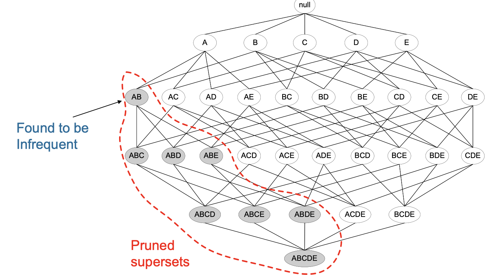
In this image, once we found AB is infrequenat, then we can prune any supersets, because if AB is found infrequent already, then any itemset containing more items involving AB would be infrequent too.
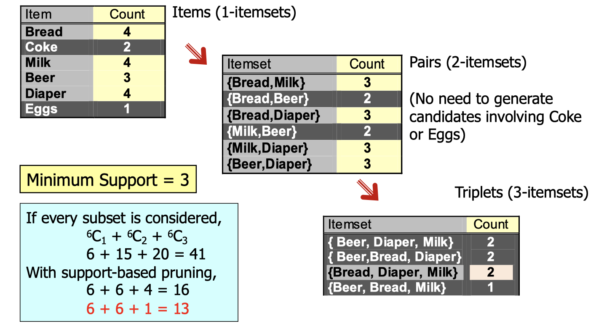
Another illustration is as the image above. If we’ve already known that Coke and Eggs are infrequent in 1-itemsets, then we we don’t need to generate candidates involving Coke or Eggs in 2-itemsets, 3-itemsets, etc. Meanwhile, since {Bread, Beer} and {Milk, Beer} are infrequent 2-itermsets, then we don’t need to generate canidates involving {Bread, Beer} and {Milk, Beer}.
Apriori Algorithm
: frequent k-itemsets
: candidate k-itemsets
- let
- Generate
= {frequent 1-itemsets}
- Repeat until
is empty
- Candidate Generation: Generate
from
- Candidate Pruning: Prune candidate itemsets in
that are infrequent
- Support Counting: Count the support of each candidate in
- Candidate Elimination: Eliminate candidates in
- Candidate Generation: Generate
Rule Generation
Given a frequent itemset , find all non-empty subsets
such that
satisfies the minimum confidence requirement
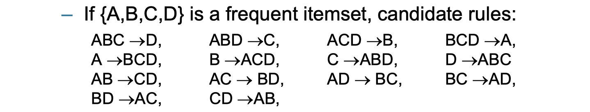
If , then there are
candidate association rules (ignoring
and
)
In general, confidence does not have an anti-monotone property, but confidence of rules generated from the same itemset has an anti-monotone property. For example, suppose {A,B,C,D} is a frequent 4-itemset:$$c(ABC \rightarrow D \geq c(AB \rightarrow CD) \geq c(A \rightarrow BCD)$$
If we found a low confidence rule, then we can pruned the following rules as the image shown below:
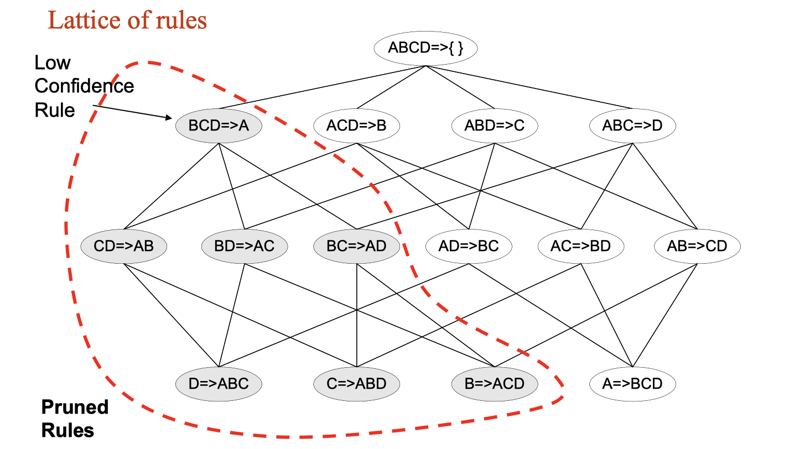
Algorithms and Complexity
Choice of minimum support threshold
- If you lower the support threshold, there will be more frequent itemsets.
- This may increase the number of candidates and max length of frequent itemsets.
Dimensionality (number of items) of the dataset
- More space is needed to store support count of itemsets
- If number of requent itemsets also increases, both computation and I/O costs may also increase
Size of database
- Run time of algorithm increases with number of transactions
Average transaction width
- Transaction width increases the max length of frequent itemsets
- Number of subsets in a transaction increases with its width, increasing computation time for support counting.
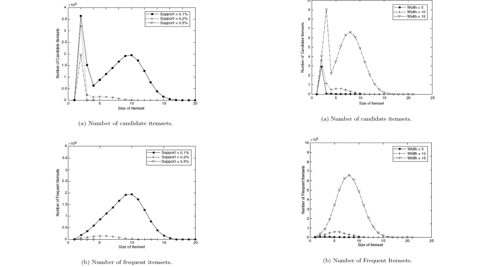
Maximal Frequent Itemset
An itemset is maximal frequent if it is frequent and none of its immediate supersets is frequent.
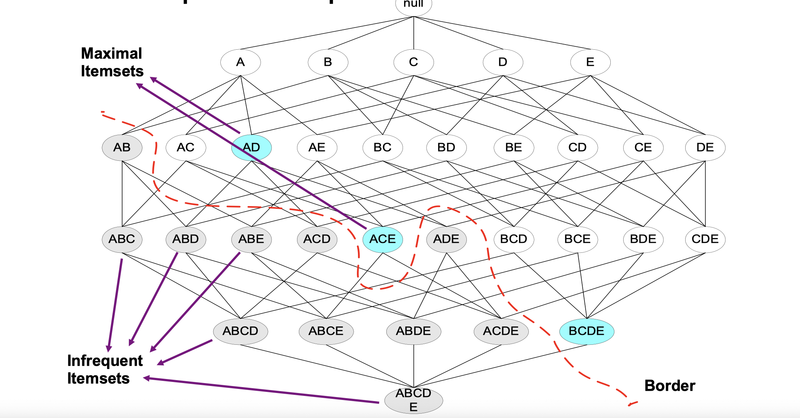
Closed Itemset
An itemset X is closed if none of its immediate supersets has the same support as the itemset X.
X is not closed if at least one of its immediate supersets has support count as X.
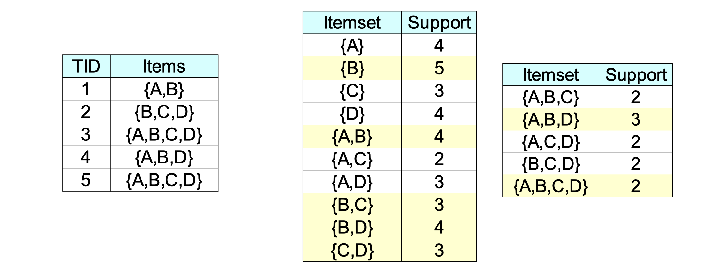
In this example, if we look at {B} = 5, and we observe that none of {A,B},{B,C},{B,D}'s support is equal with {B} = 5, then we can say {B} is a closed itemset.
Another example:
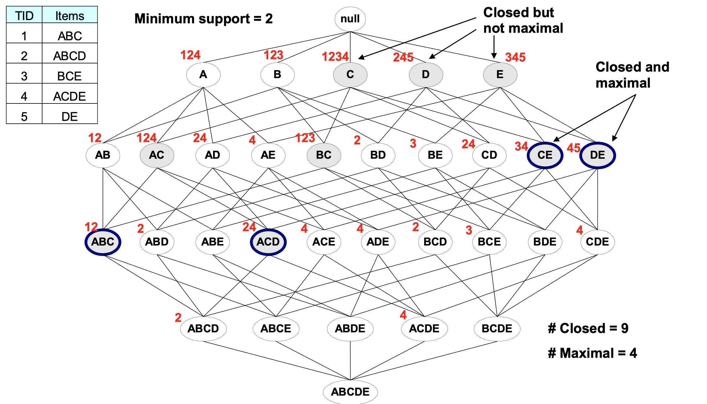
In this example, those red digits are transaction ID of the table in the top-left corner. First, if the support of an itemset’s supersets are all less than this itemset, then this itemset is a closed itemset (in grey). Second, according to the minimum support given (in this case, 2), we can say every node with more than or equal to 2 red digits are frequent. Third, among those grey nodes (closed), we can find those maximal frequent itemset and mark them in blue ring.
Question: Is any maximal itemsets also close itemsets?
- Yes, because every subsets’ support should be less them this itemset itself, then this itemset is also closed.
This Venn graph also shows the relationship between these concepts that mentioned above.
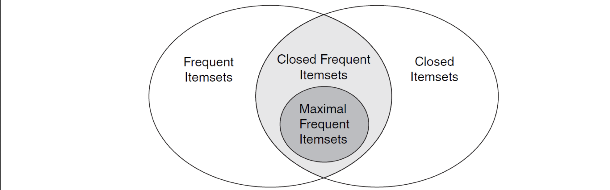
Pattern Evaluation
We’re convinced that association rule algorithms can produce large number of rules. In order to evaluate it, we need some interestingness measures that can be used to prune/rank the patterns, since in the original formulation, only support & confidence are the only measures used.
Given or
, information needed to compute interestingness can be obtained from a contingency table
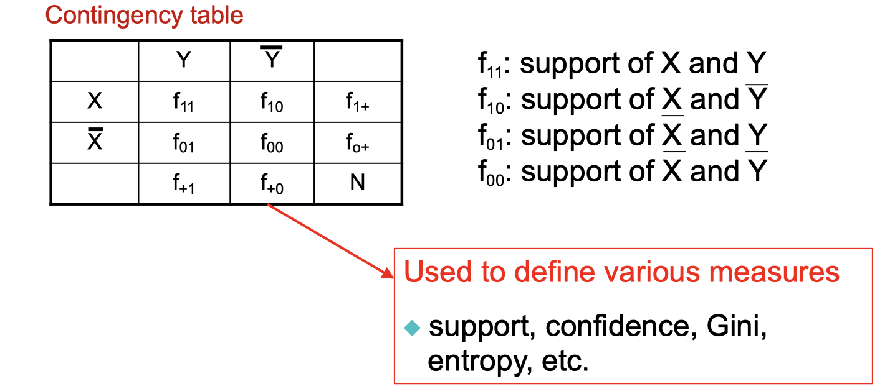
Havint this table, I’m able to construct all the measures such as support, confidence, Gini, entropy, etc.
Let’s look at the drawback of confidence:
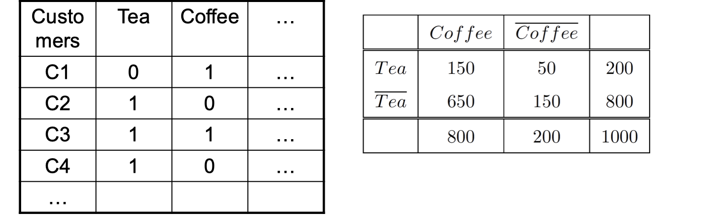
Association Rule: Tea -> Coffee
, meaning people who drink tea are more likely to drink coffee than not drink coffee, so rule seems reasonable. However, there is something wrong here with this rule, because we only that people who drink tea is unlikely to drink coffee. What’s wrong here?
, which means knowing that a person drinks tea reduces the probability that the person drinks coffee!
Note that
Let’s look at another example:
Association Rule: Tea -> Honey
, whichi may mean that drinking rea has little influence whether honey is used or not. So rule seems uninteresting.
Then, what kind of rules do we really want?
- Confidence (X->Y) should be sufficiently high
- To ensure that people who buy X will more likely buy Y than not buy Y
- Confidence (X->Y) > Support(Y)
- otherwise, rule will be misleading because having item X actually reduces the chance of having item Y in the same transaction
Statistical Relationship between X and Y
The criterion: is equivalent to
(X and Y are independent)
- If
: X and Y are positively correlated
- If
: X and Y are negatively correlated
- If
Measures that take into account statistical dependence
Now if we look at the coffee-tea example:
, but
. This implies that:
(<1, therefore is negativelyt accociated)
There are more measures:
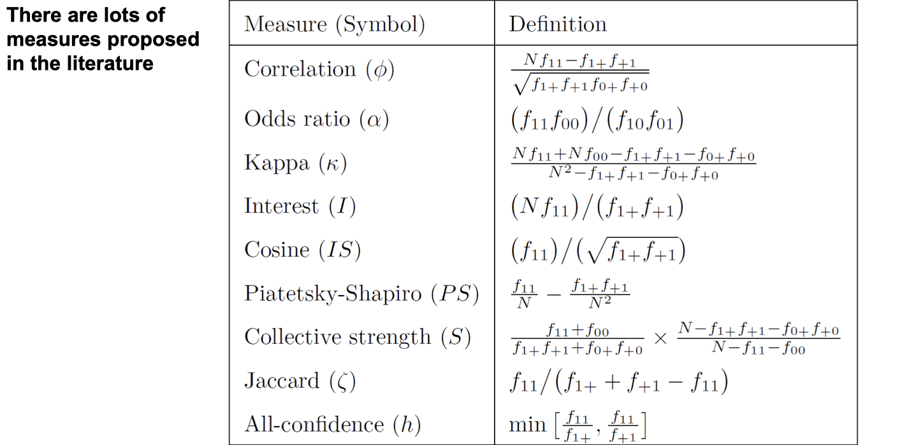
Then, how do we compare different measures?
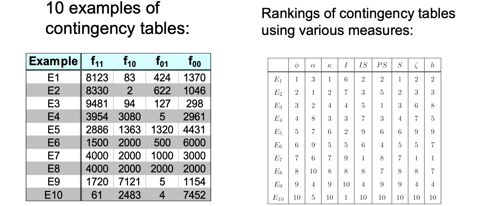
These measures are so different, how do we choose which one to use?
Let’s discover some properties
- Property under Inversion Operation
Some measures won’t change due to inversion operation. E.g., Correlation won’t change due to inversion operation.
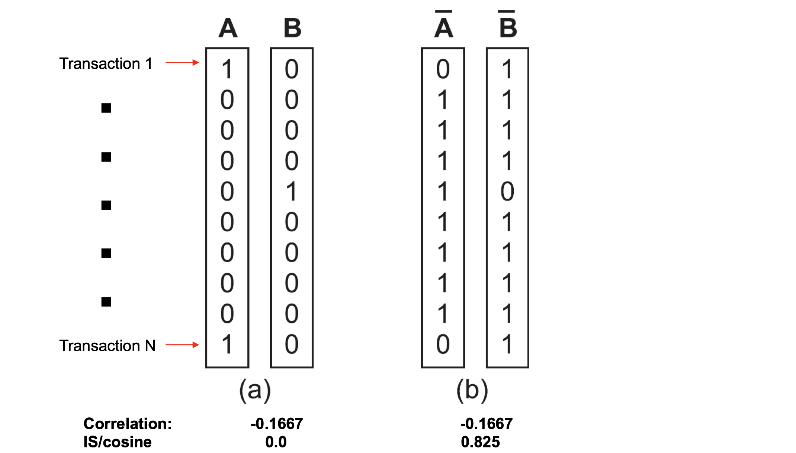 - Property under Null Addition
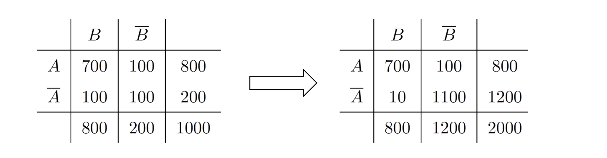
Cosine, Jaccard, All-confidence, condifence won’t change, they’re invariant measures due to Null addition. But some measures will change such as correlation, Interest/Lift, odds ratio, etc. - Property under Row/Column Scaling
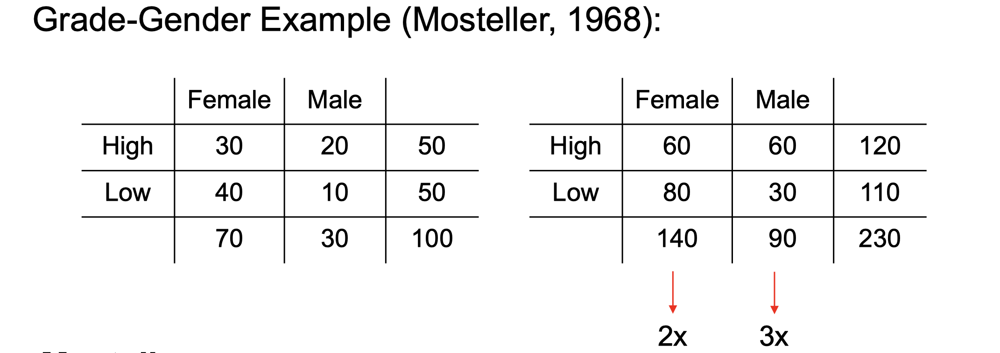
Mosteller: underlying associations hould be independent of the relative number of male and female students in the samples.
In a table:
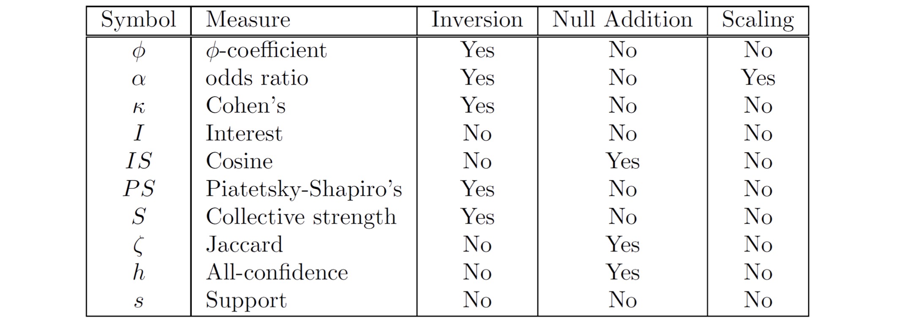
Simpson’s Paradox
Observed relationship in data may be influenced by the presence of other confounding factors (hidden cariables),i.e., hidden variables may cause the observed relationship to disappear or reverse its direction. So, proper stratification is needed to avoid generating spurious patterns.
For example, say we have two hospitals where hospital A has 80% of recovery rate from COVID, and hospital B has 90% of recovery rate from COVID. Which hospital is better?
Let’s further look at the recovery rate of different age group by a age threshold. It turns out that Hospital A has 50% of recovery rate on older population, and Hospital B has 30% of recovery rate on older population. Meanshilw, Hospital A has 99% of recovery rate on younder population while Hospital B’s is 98%.
Hospital A has both higher recovery rate than Hospital B in terms of old and yound population, but why the overall recovery is lower than the Hospital B? This is the simpson’s paradox.
Data Mining: Advance Concepts of Association Analysis
Sequential Patterns
Example of sequence:
- Sequence of different transaction by a customer at an online store
<{Digital Camera, iPad} {Memory card} {headphone, iPad cover}> - Sequence of book checked out at a library:
<{Fellowship of the Ring} {The Two Towers} {Return of the King}> - more on the table below
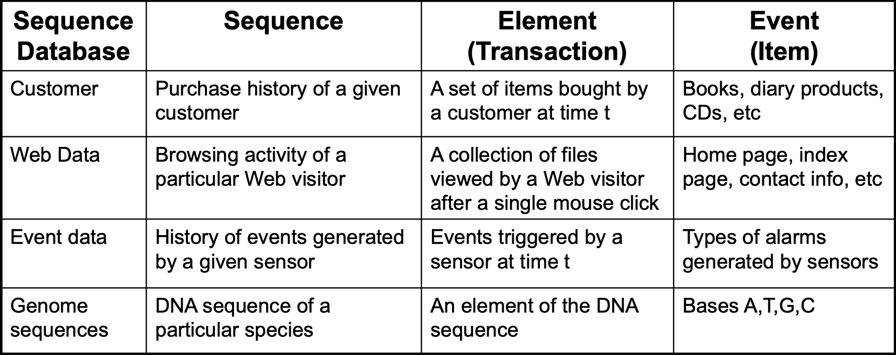
How does the sequence data look like in database?
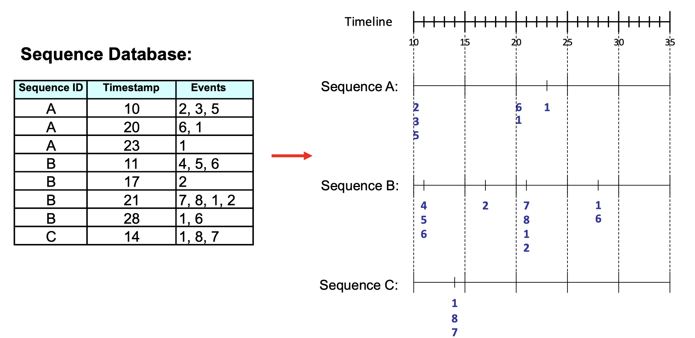
What does sequence data differ from market-basket data?
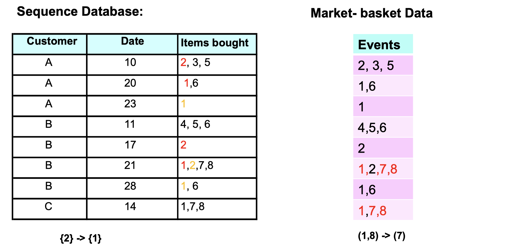
From Sequence data, we can tell people who bought item {2} would be likely to buy item {1} afterward on the next purchase. And Market-basket data tells us that people who bought item {1,8} would be likely to buy item {7} on the same purchase.
Formal def of sequence
A sequence is an ordered list of elements , when each element contains a collection of events(items)
. Length of a sequence
is given by the number of elements in the sequence. A k-sequence is a sequence that contains k events (items).
Visual def of subsequence
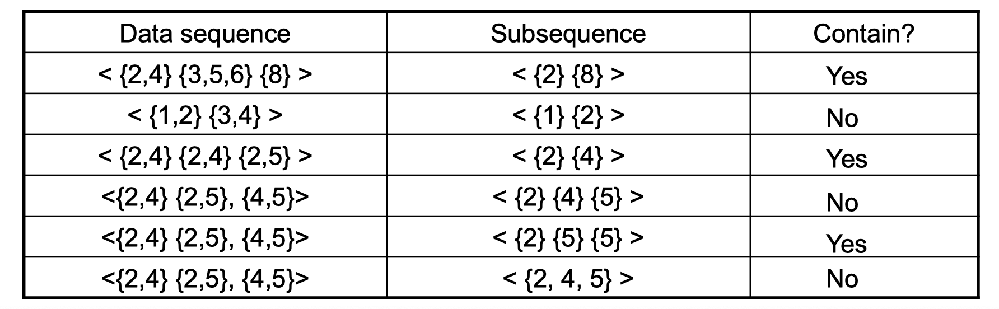
A subsequence is contained in another data sequence if each element of subsuence is a subset of a corresponding element of the data sequence. For the second row of the table, element {1} of subsuquence is a subset of element {1,2} of data sequence. Since {2} is a element in subsequence but it doesn’t have a corresponding element in data sequence, it’s not contained. Note that the order in subsequence doesn’t matter.
Sequential Pattern Mining
Now let’s talk about support again. The support of a subsequence is defined as the fraction of data sequences that contain
. A sequential pattern is a frequent subsequence (i.e., a subsequence where
). Suppose we’re given a database of sequences and a user-specified minimum support threshold (i.e., minsup), the task is to find all subsuquences with support greater than or equal to minsup. There is an example of frequent subsequences:
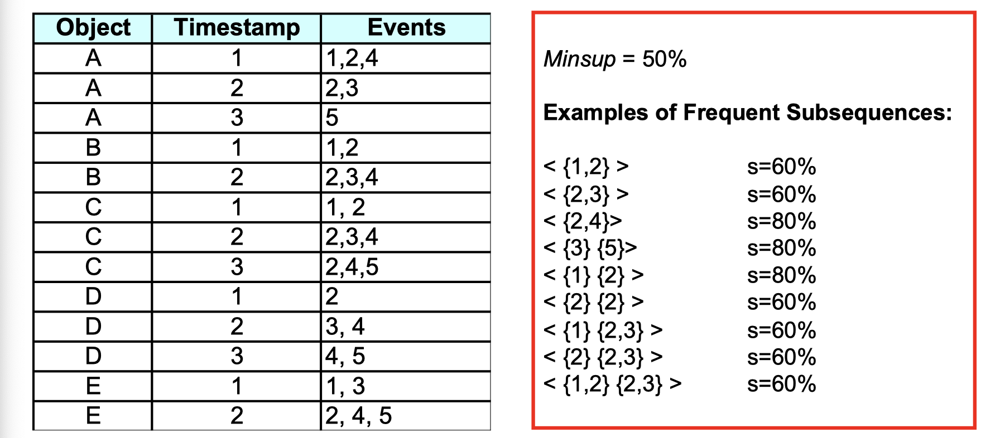
Here are only examples but not all the frequent subsequences. For instance, if we look at subsuquence <{1,2}>, since it’s a subset of sequence A B C out of A B C D E, the support of it is 60% which is higher than our specified minsup, so it’s a frequent subsequence.
After talking about support, let’s talk about confidence. The calculation of confidence here is different from normal transaction database (market-basket data).
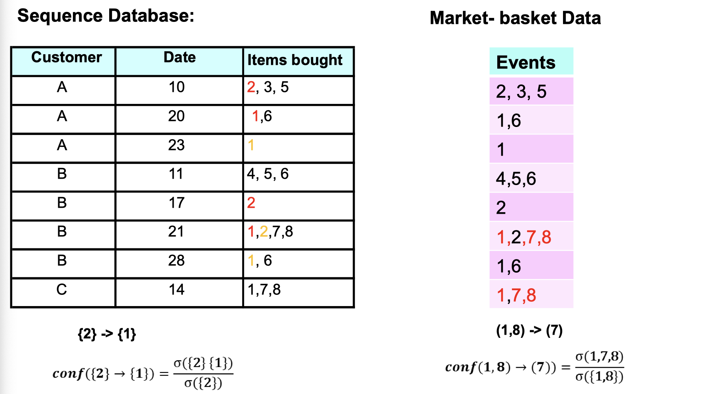
How can we extract sequential patterns?
- Given
events:
- Candidate 1-subsequences:
- Candidate 2-subsequences:
- Candidate 3-subquences:
A 2 events example:
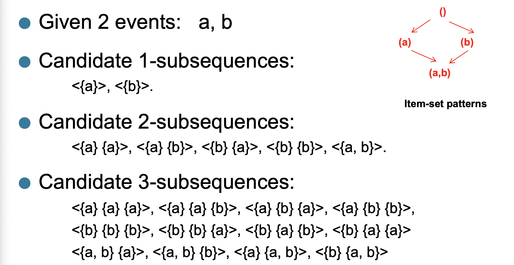
As you can see, the idea seems to be computational expensive here if we have many events. So we introduce a method called Generalized Sequential Pattern (GSP) to deal with it.
- Make the first pass over the sequence database D to yield all the 1-element frequent sequences
- Repeat until no new frequent sequences are found
- Candidate Generation: Merge pairs of frequent subsequences found in the (k-1)th pass to generate candidate sequences that contain k items
- Candidate Pruning: Prune candidate k-sequences that contain infrequent (k-1)-subsequences
- Support Counting: Make a new pass over the sequence database D to find the support for these candidate sequences
- Candidate Elimination: Eliminate candidate k-sequences whose actual support is less than minsup
What does “merge” mean above? Some example below:
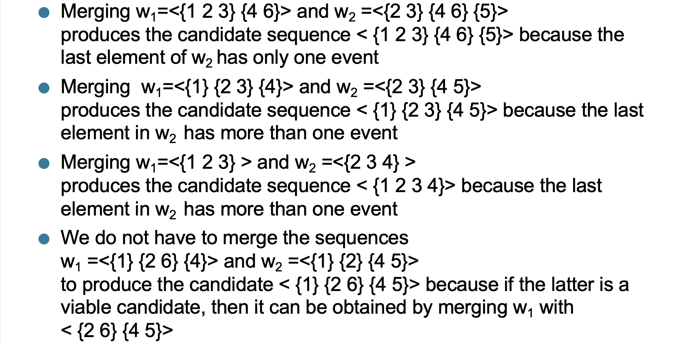
A visual walk-through of candidate generation:

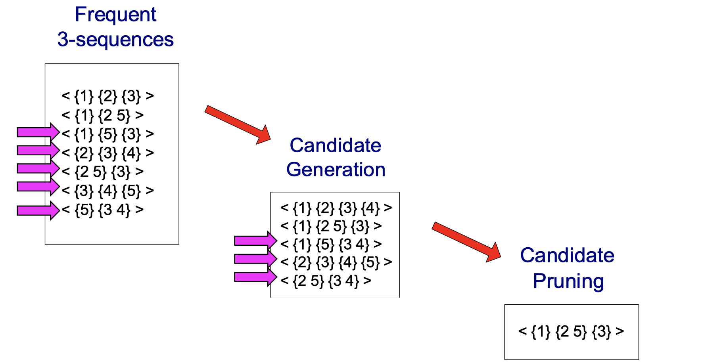
No matter which item I cross out in <{1} {2 5} {3}>, I can always find it in the frequent 3-sequences. For instance, if I cross out {1}, check if <{2 5} {3}> is in the frequent 3-sequences. If I cross out {2}, check if <{1} {5} {3}> is in the frequent 3-sequences. If I cross out {3}, check if <{1} {2 5}> is in the frequent 3-sequences. Do it for all cadidate generation and you will find only <{1} {2 5} {3}> survives, the others have been pruned.